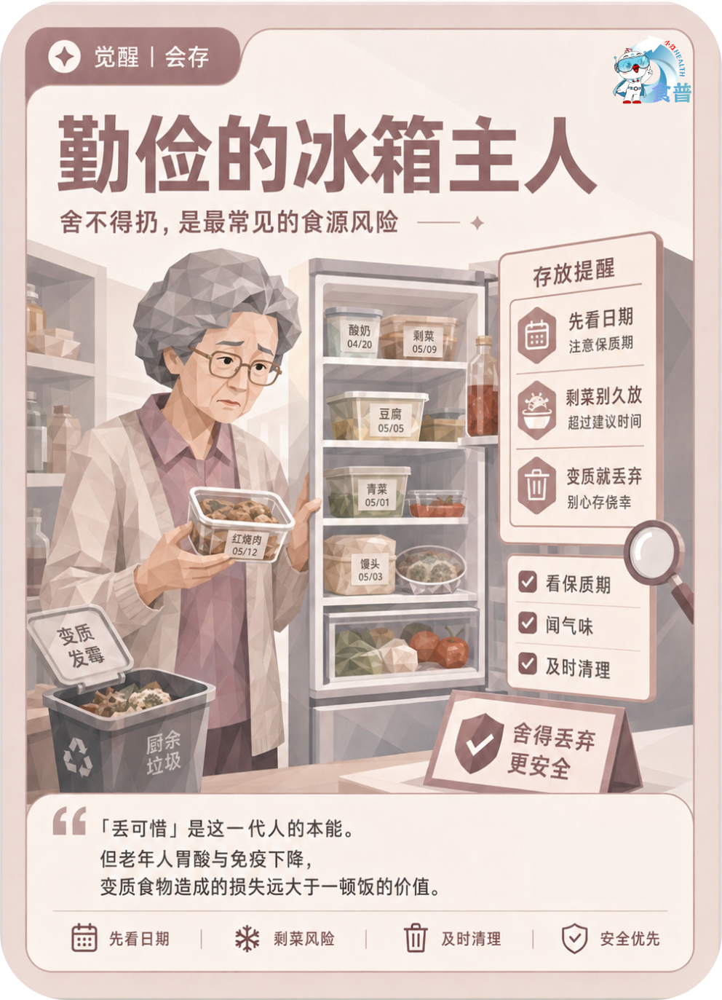

老年人群
觉醒
会存
E12
勤俭的冰箱主人
舍不得扔,是最常见的食源风险
「丢可惜」是这一代人的本能。但老年人胃酸与免疫下降,变质食物造成的损失远大于一顿饭的价值。
手机端可点击“打开原图”后长按图片保存；也可以直接长按上方图卡保存。

舍不得扔,是最常见的食源风险
「丢可惜」是这一代人的本能。但老年人胃酸与免疫下降,变质食物造成的损失远大于一顿饭的价值。
手机端可点击“打开原图”后长按图片保存；也可以直接长按上方图卡保存。